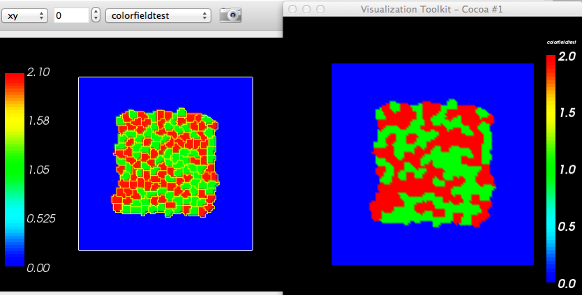

Additional bugs:
- Pause on .dml files playback, File->Open Sim is disabled, but Recent Sim is not. - Vis-> Cell Glyphs for 3D sim only displays glyphs when "3D" combobox in graphics win is selected; selecting a 2D projection disregards the glyph selection and displays normal cell vis. - Cell Glyphs do not work when playing back .vtk files (via a Lattice Desc File, LDF, or .dml) - a bug when stopping a "sim" that's playing back a .dml, then loading a new .dml (same name?); the # of files in the LatticeDataFiles table in the player contain the # from the previous one (e.g. if the new one has more files, they won't all appear!). - when 'running' through all .vtk files from a .dml, if you have a field other than the "Cell_Field" selected, it will reset to select "Cell_Field" when you reach the end.
Michael Rountree bugs/wishlist:
- saving multi-windows images - it doesn't remember zoom
- he seems to use only one (Main) graphics window and toggle between fields, clicking the camera icon for those
he wants to save images on
- he gets a blank window when he 'full-sizes' it and then goes back
- on OSX: create multi-win; gets "scrambled" (noise) images saved
- contour lines *color* not working
- used to be able to specify colors (hex) in python/playersettings; can't now
- wants PlayerSettings to update Prefs
- Prefs are global; he runs simultaneous sims and wants Prefs per sim (rf. QSettings in Qt)
Richard Spencer said he had a permission problem, running runScript and
trying to dump .vtk output, on his XGrid cluster. I emailed the
following:
Regarding the specification of output for a batch run, the "-o" arg should let you do that, e.g.: runScript.command -i Demos/cellsort_2D/cellsort_2D.xml -o /Users/heiland/tmp2 It should even create the dir if it doesn't exist. If this doesn't work for you, let us know. I exchanged several emails w/ Richard after he got back home about problems he was having with the OSX binary that Mitja provided. Eventually, we got it to work for him. One key problem was that Mitja assumed we were using Python 2.6 instead of the default (on Lion) 2.7.
Other issues: - loading in .vtk files to player; can we then save images from various fields? - binary vtk output - getting output dir in Python steppable from CompuCellSetup vs. getting from Prefs
Lengthier bug/wish list from Michael:
Fixes:
1) Hexagonal fill color for scalarfieldcellLevel is correct, but Rectangular is not colored correctly. I’ve attached a simulation under the title scalarfieldtest. View the scalarfield that is created up close in both rectangular and hexagonal lattice types. You’ll notice rectangular coordinates for the scalar field do not line up with the cell boundaries like rectangular does.
2) PlayerSettings no longer works (since new GUI interface) The same simulation as above is used as the example. Check the player settings in the configuration and note that they are not setting color of cells in the GUI (cell type 1 should be bright pink, celltype 2 should be bright green, and screenupdate frequency should be 17, with output double that). They are setting other settings though. Also, the option for using playersettings is not included in the construction of a simulation in Twedit++.
3) Hexagonal boundary conditions still do not work. Talk to Maciek about this one. He knows this is still not working for some of the plugins. Moment of inertia gives a warning, but for mitosis, the reassignment cell based information seems to be off. The one I know that it doesn’t work with is Hex type lattice.
4) After division, for some simulations, PlayerPython.fillScalarValueCellLevel(cell, 2) leaves cells black. This is most likely due to the order of steppable operation. This is after division of a cell. The coloring of the new cell is not automatically considered part of the old cell, so it has to wait for the next iteration of the coloring steppable to be able to be colored again.
5) Gradient color bar values are not inclusive (i.e. a scale from 0-2 is (0, 2) not [0, 2]). It probably should be inclusive as that seems to be the intuitive interpretation. This is pretty straight forward and shouldn’t need an explanation.
6) For visualizing additional fields, the creation of the field must be placed in the start function for some due to missing getter functions. The steppable of the attached file for cellfield test shows this. self.colorfieldtest=CompuCellSetup.createScalarFieldCellLevelPy("colorfieldtest") must be placed in the start function, otherwise there is no way to call this field to be able to modify it. This is because, within CompuCellSetup, there is a .set() function for the field, but there is not a .get() function for the field to know which one is to be modified. If fields are to be placed in the initialization section of the simulation files, then there must be a way to access them in the steppables.
Suggestions for Development:
1) Auto generation and choice for legend types for any property. i.e. CompuCellSetup.createScalarFieldCellLevelPy("SomeField", "Legend") or CompuCellSetup.createScalarFieldCellLevelPy("SomeField", "ContinuousColorBar") and if legend, be able to specify name to color. We’ve talked about this before as well. With the gradient color bar for the simulations, it would be nice to be able to tell explicitly what each color represents if they representing something other than a number/concentration.
2) Think about creating a slow division mitosis plugin which allows cells to slowly separate. Maybe by raising affinity for each daughter cell to a very large value, and slowly reducing it to the contact energy value that cells of that type would normally have. This is something that I’ve been thinking about for a little while now. For simulations which require strict control over cell division, especially orientation of division, as well as large cell sizes, when a cell divides now, it splits immediately creating a large imbalance in the system. The system must work to correct this and the oscillations that occur destroy any possibility of a lasting orientation. This is also a difficulty with large cells, as in the lens simulation that Abbas was showing, in which a cells divide, and then get out of alignment because of the imbalance, and have to slowly work their way back in. What I propose is to have a new mitosis module (or add on to the current one) that can divide a cell over several MCS. This module would allow the specification of how long a cell takes to divide once initiated as well as all the other features now included in mitosis. A cell should be able to begin the division process in such a way that the cell starts off circular, “divides”, and then slowly goes from circular to ellipsoidal. This could occur by setting the affinity of these two individual cells very high at the time of division, and then slowly reduce the affinity until it matches the normal affinity of cells of this type. Until it is created though, it is impossible to tell if this will absolutely alleviate some of the problems with mitosis, or just create more.
3) Could be useful to initialize when a steppable begins. This allows alternating steppable calls which do not overlap (ie steppable1 runs at mcs 0,2,4,6… and steppable 2 runs at mcs 3,5,7,9,…). This is pretty straight forward as well. In the initialization of a steppable class, you should have a modifier that tells when the steppable will first act. Something like steppable_start_time(3), where steppable_start_time() is a built in function (or could use just a variable) that defines when the simulation starts. This should require no extra check unless it is enabled, for efficiency.
Fix #2)
He used 'ScreenShotFrequency' instead of 'ScreenshotFrequency'. I'd like to eventually deprecate/change the following keywords:
NoOutput --> ImageOutput (and reverse meaning)
ScreenshotFrequency --> ImageFrequency
Leading to the following example use:
PluginElmnt.ElementCC3D("VisualControl",{"ScreenUpdateFrequency":17, "ImageOutput":True,"ImageFrequency":34, "LatticeOutput":False,"LatticeFrequency":100})
The original script had a typo for specifying cell type colors; fixed here:
PluginElmnt.ElementCC3D("Cell",{"Type":1,"Color":"#FF0080"})
# PluginElmnt.ElementCC3D("Cell",{"Type":1,"Color":"#00FF00"})
PluginElmnt.ElementCC3D("Cell",{"Type":2,"Color":"#00FF00"})
-------------------
Now if the user provides an invalid keyword in the Python input script for VisualControl:
ERROR in loadCustomPlayerSettings: VisualControl attribute ' ScreenShotFrequency ' is invalid
Valid attributes are ('ScreenUpdateFrequency', 'ScreenshotFrequency', 'SaveImageFrequency', 'LatticeFrequency', 'NoOutput', 'ImageOutput')
Regarding Fix #5, we must be doing something funky in cc3d, because a straight VTK-Python script displays the colormap [0,2] just fine, as seen here. To get the correct coloring in cc3d, we need to add some delta to the max range (shown here); otherwise, we get a black color for the max cell type.

~/dev/vtk-cc3d-play$ !py
python parseVTK.py Step_0250.vtk
argc= 2
range: (0.0, 2.0)
~/dev/vtk-cc3d-play$
~/dev/vtk-cc3d-play$ more parseVTK.py
import vtk
import sys, string
argc = len(sys.argv)
print 'argc=',argc
if argc < 2:
print 'Usage: ',sys.argv[0],' <filename>'
raise ValueError, 'Too few input args'
#nsteps = string.atoi(sys.argv[1])
fname = sys.argv[1]
# I can't stand the default red->blue; make a blue->red LUT
lutBlueRed = vtk.vtkLookupTable()
lutBlueRed.SetHueRange(0.667,0.0)
lutBlueRed.Build()
ren1 = vtk.vtkRenderer()
renWin = vtk.vtkRenderWindow()
renWin.AddRenderer(ren1)
iren = vtk.vtkRenderWindowInteractor()
iren.SetRenderWindow(renWin)
reader = vtk.vtkDataSetReader()
reader.SetFileName(fname)
reader.Update()
aa = vtk.vtkAssignAttribute()
aa.SetInputConnection(reader.GetOutputPort())
aa = vtk.vtkAssignAttribute()
aa.SetInputConnection(reader.GetOutputPort())
#aa.Assign("CellType", "SCALARS", "POINT_DATA")
#aa.Assign("CellId", "SCALARS", "POINT_DATA")
#aa.Assign("ClusterId", "SCALARS", "POINT_DATA")
#aa.Assign("morph", "SCALARS", "POINT_DATA")
fieldName = "morph"
fieldName = "colorfieldtest"
aa.Assign(fieldName, "SCALARS", "POINT_DATA")
aa.Update()
srange = aa.GetOutput().GetScalarRange()
print ' range: ',srange
mapper = vtk.vtkDataSetMapper()
#mapper.SetInputConnection(reader.GetOutputPort())
mapper.SetInputConnection(aa.GetOutputPort())
mapper.ScalarVisibilityOn()
mapper.SetScalarRange(srange)
mapper.SetLookupTable(lutBlueRed)
actor = vtk.vtkActor()
actor.SetMapper(mapper)
#actor.GetProperty().SetInterpolationToFlat()
#actor.GetProperty().SetInterpolationToGouraud()
#actor.GetProperty().SetInterpolationToPhong()
#------------------------
scalarBar = vtk.vtkScalarBarActor()
scalarBar.SetLookupTable(lutBlueRed)
scalarBar.SetTitle(fieldName)
scalarBar.GetPositionCoordinate().SetCoordinateSystemToNormalizedViewport()
#scalarBar.GetPositionCoordinate().SetValue(0.8,0.05)
scalarBar.SetOrientationToVertical()
scalarBar.SetWidth(0.1)
scalarBar.SetHeight(0.9)
scalarBar.SetPosition(0.88,0.1)
#scalarBar.SetLabelFormat("%-#6.3f")
scalarBar.SetLabelFormat("%-#3.1f")
scalarBar.GetLabelTextProperty().SetColor(1,1,1)
#scalarBar.GetTitleTextProperty().SetColor(1,0,0)
ren1.AddActor2D(scalarBar)
ren1.AddActor(actor)
renWin.SetSize(512,512)
renWin.SetSize(300,300)
renWin.SetSize(400,400)
renWin.Render()
iren.Start()